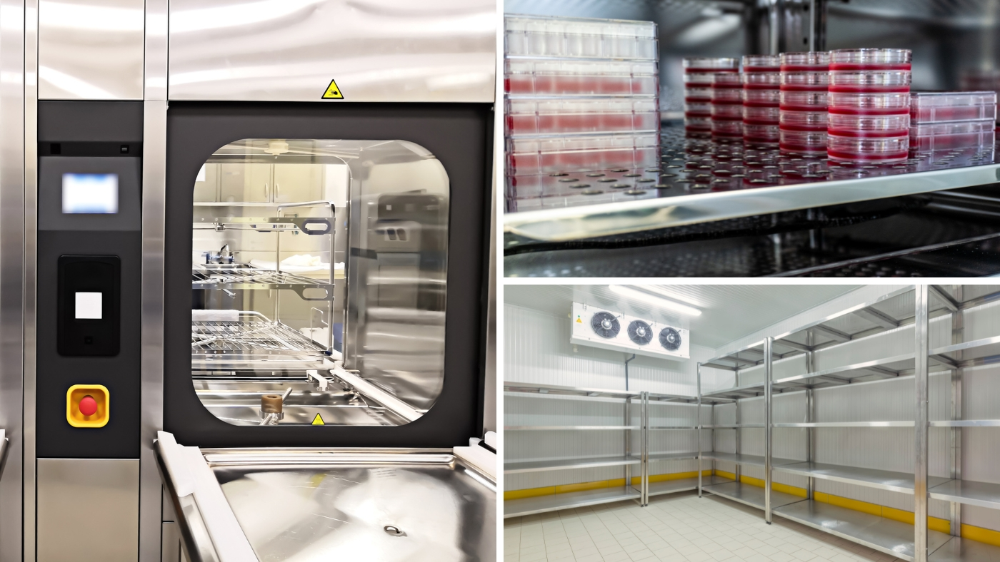

Akademia Walidacji
Praktyczne kursy dla osób, które kwalifikują i walidują: od pojedynczego testu do świadomej decyzji kwalifikacyjnej.
Cleanroom i komory UDAF/BSC
Ochrona produktu, operatora i otoczenia oraz kontrolowane środowisko dla procesu.
- Integralność HEPA, downflow i inflow
- Smoke study i technika aseptyczna
- Klasyfikacja cząstek, ACH i kaskada ciśnień
- Rekwalifikacja UDAF i cleanroomu

Termostatyki – urządzenia i obszary
Mapowanie temperatury w obszarach CRT/CCT i urządzeniach termostatycznych.
- Rozkład czujników w obszarach i urządzeniach
- Mapowanie temperatury krok po kroku
- Analiza wyników i raport kwalifikacji
- Rekwalifikacja po relokacji i awarii
Czym jest Akademia Walidacji?
Akademia Walidacji to zbiór praktycznych kursów dla osób, które kwalifikują i walidują pomieszczenia czyste, komory UDAF/BSC oraz urządzenia i obszary termostatyczne w środowisku GMP.
Każdy kurs pokazuje, jak wykonać test, jak odczytać wynik i jak na jego podstawie podjąć decyzję kwalifikacyjną. Kursy możesz realizować osobno albo jako całą ścieżkę.
Praktyka zamiast teorii
Przykłady z realnych projektów kwalifikacyjnych.
Od testu do decyzji
Uczysz się łączyć pojedyncze wyniki w jedną decyzję kwalifikacyjną.
Podejście oparte na ryzyku
Zakres rekwalifikacji dobierasz świadomie, a nie z przyzwyczajenia.
Elastyczna kolejność
Kursy możesz realizować osobno lub jako spójną ścieżkę.